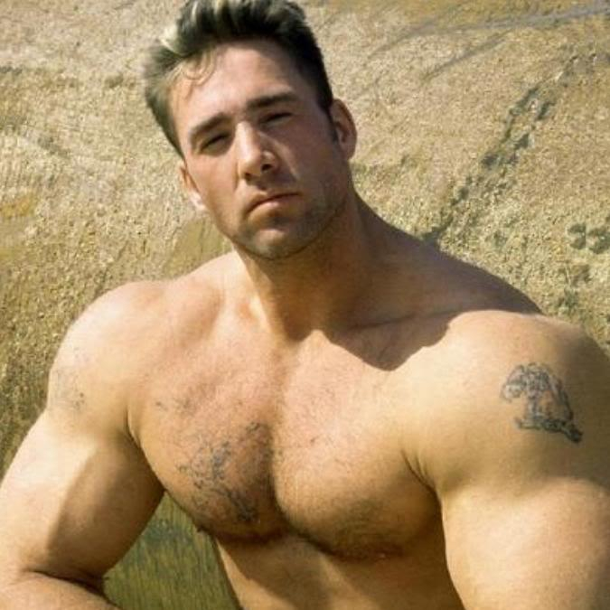
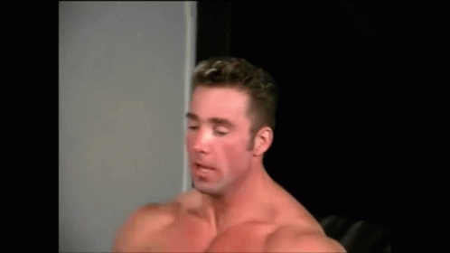
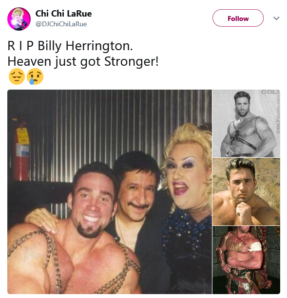
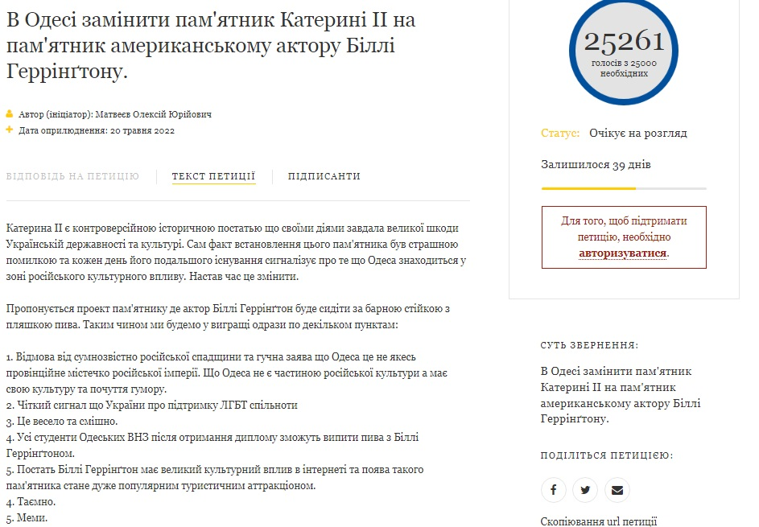
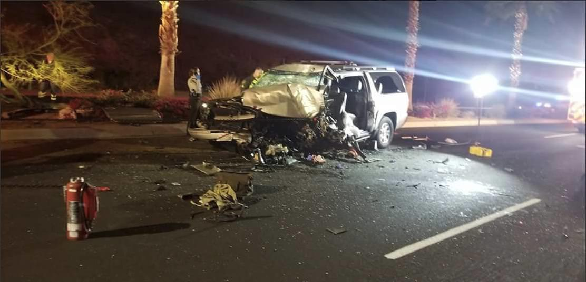

Billy Herrington - From a Slave to a Dungeon Prophet
Dedicated to our ♂ Boss of the gym ♂ in honour and loving memory of Billy Herrington
William Glen Harold Herrington, known professionally as Billy Herrington
or as ♂ Dungeon Master ♂,
was an American adult film actor and bodybuilder, affectionately nicknamed "Aniki" (兄貴, jp. "Big Brother")
in the Japanese online communities.
In the late 2000s, his appearances in various gay pornography movies led him to become a popular Internet meme on video-sharing websites such as Japan's Nico Nico Dōga,
where he was referred to by the sobriquet "Aniki" (兄貴, lit. "older brother"). Since then, at least 110,000 short mash-up parodies of his clips—known as "Gachimuchi Pants Wrestling" (ガチムチパンツレスリング Gachimuchi Pantsu Resuringu) have been produced by fans.
Herrington's fame began in 2007 in Japan, after clips from one of his films titled "Workout: Muscle Fantasies 3"
became used as a bait-and-switch video and the source material for high-quality MAD remixes. |

William Herrington on the beach |
Online history
Born and raised in Long Island, New York, Herrington began pursuing his acting career after his high school graduation in 1996
when one of his nude submissions won him Playgirl magazine's "Real Men of the Month" contest. His appearance in the magazine caught the eye of famed photographer
Jim French, but it was two years before Herrington posed for his first Colt calendars for French.
In the following years, Herrington modeled for French nude calendars and starred in a number of hardcore adult films that made him one of the best known same-sex adult
films stars of the late 1990s, appearing on mainstream TV programs such as Love Connection and the Ricki Lake talk show.
However, his internet fame began many years later on September 30th, 2007 with the upload of a video clip from
Herrington's "Workout Muscular Men 3" via video-sharing community Nico Nico Douga (NND). Titled "Professional Pants-Wrestling"
(jp. 本格的 ガチムチパンツレスリング), the video gained more than 5.5 million views in less than five years.

Billy Herrington is ready to take a fight with his gym mate in "Workout Muscular Men 3"
Glory as a meme
Herrington gained fame in Japan as an Internet meme, after a clip from one of his videos, Workout: Muscle Fantasies 3, was posted on Niconico, a Japanese video sharing website, on August 10, 2007.
Thousands of mash-up parody videos of him have been made,
many of which utilize deliberate mishearings of lines from his films. He is affectionately called "Aniki" (兄貴, lit. older brother) among the Nico Nico Douga community, and most of his videos are deliberately mistagged with "Wrestling Series" (レスリングシリーズ, resuringu shirīzu), "Forest Fairy" (森の妖精, mori no yōsei), "Philosophy" (哲学, tetsugaku), or all three.
In February 2009, Herrington visited Japan to attend a live online event hosted by Niconico and garage kit maker Good Smile Company. Herrington said that he is flattered and humbled by his fans' creativity. A limited-edition Herrington figure was announced for a July 2009 release. Two other limited-editions Herrington action figures were announced for the Halloween and Christmas holiday. The Halloween figure was released in October 2009 and the Christmas one was released in December 2009; both are Nico Nico Chyokuhan exclusives.
As of March 2018, over 110,000 Gachimuchi Pants Wrestling videos had been uploaded on YouTube alone. |

Aniki's speech on Nico Nico |
Death
On March 1st, 2018, Herrington got into a car accident on California State Route 111 in Rancho Mirage and was transported to a hospital, where he died the next day at the age of 48.
Two days later, pornographic film director Chi Chi LaRue tweeted a memorial tweet for Herrington, which gained over 4,000 retweets and over 1,500 likes in less than 12 hours. Shortly after, Herrington's mother, Kathleen Wood, confirmed the death in a Facebook post which recieved over 1,400 reactions over the same time, revealing he died in a car accident. The hashtag #ビリー兄貴 ("Billy aniki") was used on Twitter in memory of Herrington.

Memorial
As a smaller footnote in the larger War in Ukraine, a petition was put in that had enough signatures to force the Ukrainian President Zelensky to officially consider the city of Odessa putting up a statue of Billy Herrington to replace a Russian statue of Catherine the Great.
The petition needed 25,000 signatures, which it acquired, meaning Zelensky is now legally obligated to consider the proposal. The proposed idea is claimed to be a way to remove Russian influence from Odessa, while the statue which would be of Billy Herrington Drinking Beer.
| 
Petition about placing Billy Herrington's statue instead of Catherine the Great's one
in Odessa alongside with evidence of reaching 25000 signatures
needed for obligation of consideration of the proposal |

Aniki's crashed car on a highway 111 |
Videography
| Name of film |
Year of release |
Production company |
- 9½ Inches
- Wrestlers: Muscle Fantasies 2
- Workout: Muscle Fantasies 3
- Minute Man 17
- Minute Man 18
- Body Shop
- Summer Trophies
- Tales from the Foxhole
- Lords Of The Locker Room
- Playing with Fire
- The Final Link
- HotMen CoolBoyz
- Conquered
- Flesh Trap
|
1998
1998
1999
1999
1999
1999
1999
1999
1999
2000
2000
2000
2001
2001
|
Thor Productions
Can-Am Productions
Can-Am Productions
Colt Studios
Colt Studios
All Worlds
Pacific Sun Entertainment
All Worlds
Can-Am Productions
All Worlds
All Worlds
Zentropa
All Worlds
Fox Studios |
Awards and Nominations
Adult Erotic Gay Video Awards
- 2000 - Colt Man of the Year
- 2002 – Winner – Best Group Sex Scene (for Conquered)
- 2002 – Nominated – Best Actor (for Conquered)
- 2002 – Nominated – Best Three-Way Sex Scene (for Conquered)
GayVN Awards
- 2002 – Nominated – Best Actor (for Conquered)
- 2002 – Nominated – Best Group Scene (for Conquered)
See also